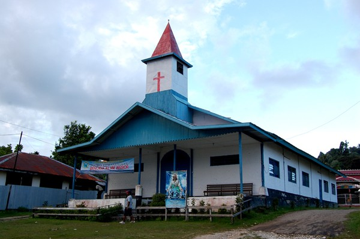
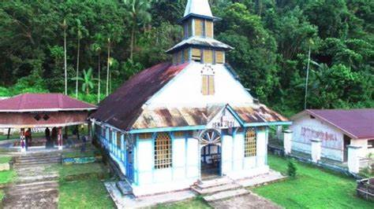
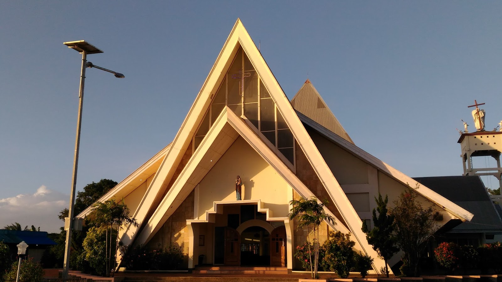

Gereja guti
ditulis oleh Warisan Budayapada 1 April 2024
Gereja Guti, juga dikenal sebagai Gereja Kristen Injili di Tanah Papua (GKI), adalah salah satu denominasi gereja Protestan yang aktif di Provinsi Papua, Indonesia. Gereja ini memiliki sejarah yang kaya dan berperan penting dalam kehidupan rohani dan sosial masyarakat Papua. Berikut adalah deskripsi lengkap tentang Gereja Guti:
Lokasi dan Jangkauan: Gereja Guti memiliki gereja-gereja dan jemaat yang tersebar di seluruh wilayah Papua, baik di kota-kota besar seperti Jayapura, Merauke, Sorong, maupun di desa-desa pedalaman yang terpencil. Jangkauannya mencakup berbagai komunitas etnis dan budaya yang beragam di wilayah Papua.
Sejarah: Gereja Guti memiliki akar yang dalam dalam pergerakan misi Kristen di Papua. Didirikan pada awal abad ke-20, gereja ini muncul sebagai hasil dari upaya misionaris yang datang dari berbagai negara untuk mengabarkan Injil di Papua. Sejak itu, Gereja Guti telah menjadi salah satu denominasi Protestan terbesar di Papua.
Kebaktian dan Kegiatan Rohani: Gereja Guti mengadakan kebaktian rutin dan kegiatan rohani lainnya, seperti ibadah mingguan, katekisasi, persekutuan doa, dan kegiatan remaja dan pemuda. Gereja ini juga aktif dalam pengajaran dan pendidikan agama Kristen di sekolah-sekolah dan lembaga pendidikan lainnya.
Peran Sosial dan Pembangunan: Selain aspek rohani, Gereja Guti juga terlibat dalam berbagai kegiatan sosial dan pembangunan di masyarakat. Misalnya, mereka terlibat dalam pendidikan, kesehatan, pembangunan infrastruktur, serta advokasi untuk hak asasi manusia dan keadilan sosial.
Peran Sosial dan Pembangunan: Selain aspek rohani, Gereja Guti juga terlibat dalam berbagai kegiatan sosial dan pembangunan di masyarakat. Misalnya, mereka terlibat dalam pendidikan, kesehatan, pembangunan infrastruktur, serta advokasi untuk hak asasi manusia dan keadilan sosial.
Arsitektur Gereja: Arsitektur gereja-gereja Guti bervariasi tergantung pada lokasi dan budaya lokal di mana gereja tersebut berada. Namun, banyak gereja Guti di Papua memiliki ciri khas arsitektur yang sederhana namun megah, sering kali menggabungkan elemen-elemen tradisional Papua dengan gaya arsitektur modern.
